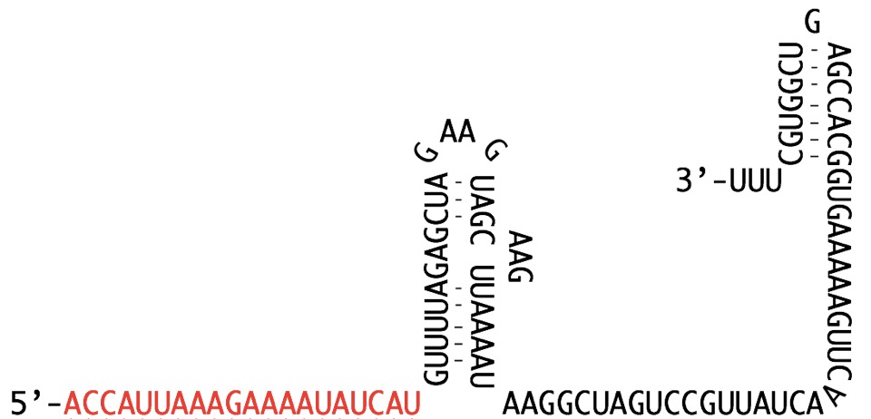
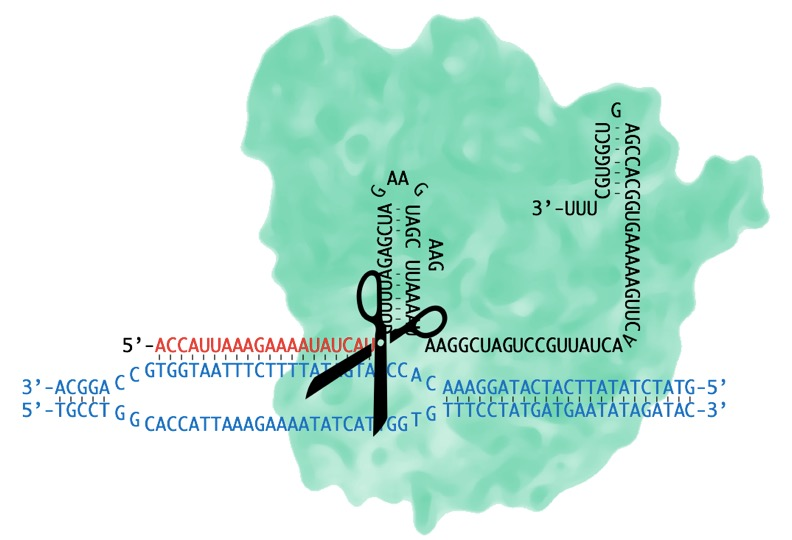

Every gene is a sequence of the four same bases: A, C, G, and T. Genetic diseases can occur when that sequence is changed, or mutated, from the usual sequence. For example, a mutation that changes the sequence from ATCTTT to ATT (a deletion of the bases CTT) in the gene CFTR can cause the disease cystic fibrosis.
CRISPR/Cas9 is a technique for gene editing. It allows for the introduction of mutations at specific locations in the genome.
Figure 1. The sequence of the gene CFTR near the F508del mutation. The upper seqence shows the usual sequence, which includes the F508 codon (in green). Deletion of the F508 codon (a mutation called F508del) is shown in the lower sequence. Both sequences have two rows of bases because DNA is double stranded. The forward strand is read in the 5' to 3' direction, and the reverse strand is read in the 3' to 5' direction.
What if it were possible to those 3 bases back into the gene CFTR? Each cell in the body has its own copy of the genome (and CFTR). So if we could add CTT back to CFTR in one cell, then that cell would be “cured” of cystic fibrosis. And if we could put that CTT back into all (or many) of the cells of a person with cystic fibrosis, then they would be cured!
Making specific changes to the genome is the goal of gene-editing. CRISPR/Cas9 is a technique for gene-editing.
There are two problems in gene editing: (1) finding the right spot in the genome and (2) making the desired edit.
In the maze of the 3.2 billion bases of the human genome, how does one find the right couple of bases to edit? The base pairs are too small to see with any microscope, so dissection is not an option. Fortunately, nature has come up with ways to target specific sequences of DNA. For example, the bacterial protein Cas9 specifically binds to harmful viral DNA sequences with the help of a special RNA sequence. This RNA sequence is transcribed from the CRISPR region of the bacterial genome, hence the term CRISPR/Cas9. When Cas9 binds DNA, it cuts the DNA strand into two pieces. Cutting apart viral DNA destroys it and protects the bacteria from harm. Some clever scientists, including Mali et al. and Le Cong et al., adapted the bacterial CRISPR/Cas9 system for use as a gene-editing tool. Cutting apart genomic DNA is the first step in gene editing.
Figure 2. Cas9. The Cas9 protein is a nuclease. Nucleases like Cas9 can cut apart DNA.
Figure 3. guideRNA.The guideRNA is designed by scientists to contain two domains: the first domain (shown in red) matches the target sequence of DNA and the second domain (shown in black) folds in on itself, giving it what is called secondary structure, so that it can bind to Cas9. In this figure, the first domain targets CFTR DNA that has the F508del mutation.
Figure 4. The Cas9 + guideRNA complex bound to genomic DNA. Genomic DNA with the sequence of CFTR near the F508del mutation is shown in blue. Part of the genomic DNA has "unzipped" and one strand is bound to the guideRNA. Cas9 will break the DNA near the location of the scissors shown in the figure.
Once the right genomic location is cut, the next goal is to make a specific change in the DNA sequence. For example, reintroduction of the missing CTT base pairs into the gene CFTR. This is actually the easy part of gene-editing. Breaks in DNA structure trigger cellular DNA damage repair pathways. The homology directed repair pathway uses a template sequence to repair DNA breaks. Making the desired edit therefore involves the introduction of a template sequence with the edit. The cell incorporates the edit during the natural DNA repair process.
In the introduction, I mentioned that each cell in the body has its own copy of the genome (and CFTR). So curing a person of cystic fibrosis would necessitate editing all (or many) of that person’s trillions of cells. This has proven difficult. So get excited about CRISPR/Cas9, but know that there is work to be done to reach cures for genetic disorders. With that in mind, current areas of CRISPR/Cas9 research are: (1) delivery of gene-editing to specific tissues in the body with the eventual goal of reaching the whole body, (2) development of gene-edited cells and organisms for modeling disease, and (3) other uses for gene targeting (using CRISPR with re-engineered versions of Cas9).